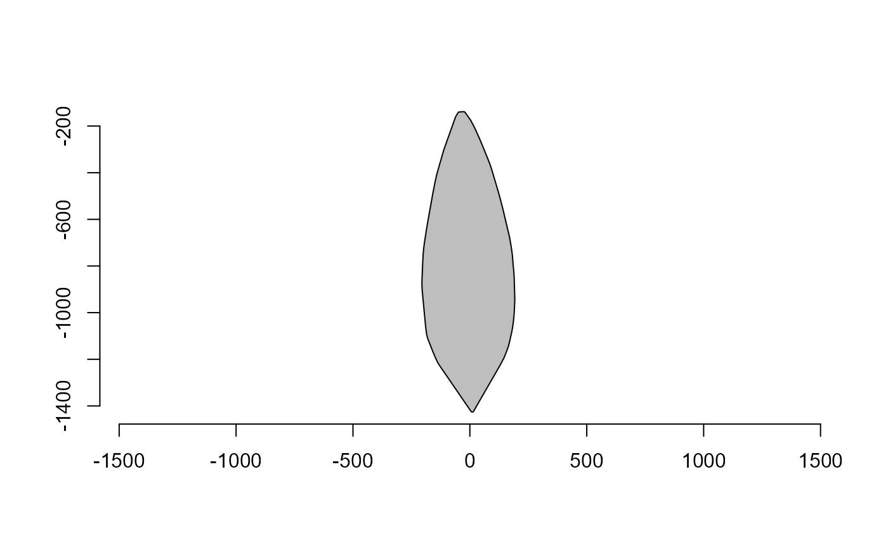

The function computes the polygonal convex hull of the points in x and then returns the number of points that lie below a specified set of heights along the vertical axis of the convex hull.
Usage
poly_width_at(
x,
at = c(0.05, 0.25, 0.5, 0.75, 0.95),
unify = FALSE,
plot = FALSE
)Arguments
- x
A vector containing two-dimensional data points (often produced with object_contour).
- at
A vector of heights along the vertical axis of the convex hull at which to count the number of points below. The default value is
c(0.05, 0.25, 0.5, 0.75, 0.95), which means the function will return the number of points below the 5th, 25th, 50th, 75th, and 95th percentiles of the convex hull. Ifat = "heights"is used, the function returns the width for each point of the object length.- unify
A logical value indicating whether to use the unified convex hull calculation method. If unify = TRUE, coordinates in x will be first bound before computing the convex hull.
- plot
A logical value that specifies whether the widths should be plotted.
Value
A vector with the widths of the convex hull at the specified heights or a list of vectors with the widths of each component.
Details
The convex hull computed from x is aligned along the major axis and then converted to a binary image. For each height in the at vector, the function computes the corresponding row number in the binary image (i.e., the row number that corresponds to the specified height along the vertical axis of the convex hull) and sums the values in that row to obtain the number of points that lie below the specified height. If the convex hull contains multiple polygons and unify = FALSE, the function loops over each polygon and returns a list of the number of points below the specified heights for each polygon. If the convex hull contains only one polygon or multiple polygons and unify = TRUE, the function returns a vector of the number of points below the specified heights for that single polygon.
Examples
if (interactive() && requireNamespace("EBImage")) {
cont <- contours[[2]]
plot_polygon(cont |> conv_hull() |> poly_align())
# width below 5th, 25th, 50th, 75th, and 95th percentiles of the length
wd <- poly_width_at(cont)
wd
# width along the height
poly_width_at(cont, at = "height", plot = TRUE)
}

#> [1] 2 7 10 11 12 13 15 17 17 19 20 21 23 24 25 26 28 28 30 32
#> [21] 32 34 35 36 37 39 41 41 43 44 45 46 48 49 50 52 52 54 55 56
#> [41] 58 59 60 61 63 64 65 67 68 69 70 72 72 74 76 76 78 79 80 82
#> [61] 83 84 85 87 88 89 91 92 93 94 96 96 98 100 100 102 103 104 105 107
#> [81] 108 109 111 112 113 114 116 117 118 120 120 122 123 124 126 127 128 129 131 131
#> [101] 133 135 135 137 138 140 141 142 144 144 146 147 148 150 151 152 153 155 155 157
#> [121] 159 159 161 162 164 164 166 168 168 170 171 172 173 175 176 177 179 179 181 182
#> [141] 183 185 186 188 188 190 191 192 194 195 196 197 199 199 201 203 203 205 206 207
#> [161] 209 210 212 212 214 215 216 218 219 220 221 223 223 225 227 227 229 230 231 232
#> [181] 234 236 236 238 239 240 241 243 244 245 247 247 249 250 251 253 254 255 256 258
#> [201] 259 260 262 262 264 265 266 267 268 269 271 271 273 273 275 275 277 277 279 280
#> [221] 281 282 283 284 285 286 287 288 289 290 291 292 293 294 294 296 296 297 298 299
#> [241] 300 300 301 302 303 304 304 306 306 307 308 308 310 310 311 312 312 313 314 315
#> [261] 316 316 317 318 319 319 321 321 321 323 323 324 325 325 327 327 328 329 329 330
#> [281] 331 332 332 333 334 334 334 336 336 337 338 338 339 339 341 341 341 342 343 344
#> [301] 344 344 345 346 347 347 347 349 349 349 350 351 351 352 352 353 354 354 355 355
#> [321] 356 356 357 357 357 358 359 359 359 360 361 361 361 361 362 363 363 363 364 364
#> [341] 364 365 365 366 366 366 366 367 368 368 368 368 368 369 369 369 370 370 370 371
#> [361] 371 371 371 371 371 373 373 373 373 373 373 373 374 374 375 375 375 375 375 375
#> [381] 376 376 376 376 376 377 377 378 378 378 378 378 378 378 378 378 380 380 380 380
#> [401] 380 380 380 380 380 380 381 382 382 382 382 382 382 382 382 382 382 383 384 384
#> [421] 384 384 384 384 384 384 384 385 385 385 385 385 385 386 386 386 386 386 387 387
#> [441] 387 387 387 387 387 387 387 387 387 388 388 388 388 389 389 389 389 389 389 390
#> [461] 390 390 390 390 390 390 390 390 390 390 391 391 391 391 391 391 391 392 392 392
#> [481] 392 393 393 393 393 393 393 393 393 393 393 394 394 394 393 393 393 393 393 393
#> [501] 393 393 394 394 394 394 394 394 394 394 394 394 395 395 395 395 395 395 395 395
#> [521] 395 395 395 395 395 396 396 395 395 395 395 395 395 395 395 395 395 395 395 395
#> [541] 395 395 395 395 395 395 395 395 395 396 396 396 396 396 396 396 396 396 396 395
#> [561] 395 394 394 394 394 394 394 394 394 394 394 394 394 394 394 394 394 394 394 394
#> [581] 394 394 394 394 394 392 392 392 392 392 392 392 392 392 392 392 392 392 392 392
#> [601] 391 391 391 391 391 391 391 391 391 390 390 390 389 389 389 389 389 389 389 389
#> [621] 389 389 389 388 388 388 388 388 388 388 388 388 388 388 387 386 386 386 386 386
#> [641] 386 386 386 386 386 386 386 385 385 385 385 385 385 384 384 384 384 384 383 383
#> [661] 383 383 383 383 383 383 383 383 383 382 382 382 381 381 381 381 381 381 381 381
#> [681] 380 380 380 380 380 380 378 378 378 378 378 378 378 377 377 377 376 376 376 376
#> [701] 375 375 375 375 375 374 374 373 373 373 373 373 373 373 371 371 371 371 371 371
#> [721] 370 370 369 369 369 368 368 368 368 367 367 366 366 366 366 365 365 364 364 364
#> [741] 364 364 363 362 362 362 362 362 361 360 360 360 360 359 359 358 358 358 357 357
#> [761] 357 356 355 355 355 355 354 354 353 353 352 352 352 352 351 350 350 350 350 349
#> [781] 349 348 348 347 347 347 347 345 345 345 345 345 344 343 343 343 342 342 342 341
#> [801] 340 340 340 340 339 338 338 338 337 337 336 336 336 335 335 335 334 333 333 333
#> [821] 333 332 331 331 331 330 330 329 329 329 328 328 328 327 326 326 326 326 325 324
#> [841] 324 324 323 323 322 322 321 321 321 321 320 319 319 319 319 317 317 317 317 316
#> [861] 316 315 315 314 314 314 314 313 312 312 312 312 310 310 310 310 309 309 308 307
#> [881] 307 307 307 306 305 305 305 304 304 303 303 302 302 302 302 300 300 300 300 299
#> [901] 299 298 297 297 297 297 295 295 295 295 294 294 293 293 292 292 292 292 290 290
#> [921] 290 290 289 288 288 287 287 287 287 285 285 285 285 284 283 283 283 282 282 281
#> [941] 280 280 280 280 279 278 278 277 277 277 275 275 275 275 274 273 273 272 272 272
#> [961] 271 270 270 270 269 268 268 267 267 267 267 265 265 265 264 264 263 262 262 262
#> [981] 262 260 260 260 259 259 258 258 257 257 257 255 255 255 254 253 253 253 252 252
#> [ reached getOption("max.print") -- omitted 288 entries ]